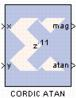

|
|
The Xilinx CORDIC ATAN reference block implements a rectangular-to-polar coordinate conversion using a fully parallel CORDIC (COordinate Rotation DIgital Computer) algorithm in Circular Vectoring mode.That is, given a complex-input <x,y>, it computes a new vector <m,a>, where magnitude m = K x sqrt (x2 + y2), and the angle a = arctan(y/x). As is common, the magnitude scale factor K = 1.646760... is not compensated in the processor, i.e. the magnitude output should be scaled by this factor. The CORDIC processor is implemented using building blocks from the Xilinx blockset.